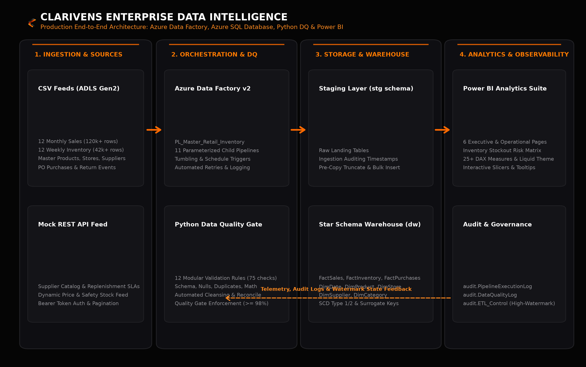

Flagship Enterprise Platform · Cloud Data & Automation
Clarivens Inventory Intelligence — Azure Retail Analytics Platform
An enterprise-grade, end-to-end retail data platform that automates multi-source ingestion, data quality validation, warehouse transformation, and business intelligence. Architected for a multi-format retail group operating 36 physical stores across 9 Indian states, the platform ingests 178,000+ transactional and inventory records, enforces a 12-rule Python automated data-quality gate, orchestrates incremental loading into an Azure SQL dimensional star schema, and powers an executive 6-page Power BI suite.
Retail transactional and inventory data arrived fragmented across POS registers, flat supplier spreadsheets, and vendor APIs, creating blind spots in stockout risks, overstocked capital, and margin erosion.
Engineered an automated Azure Data Factory v2 pipeline extracting multi-source records into Azure Data Lake Storage Gen2, with orchestrated pipeline triggers and automated retry policies.
Implemented a 12-rule automated Python audit gate validating referential integrity, range bounds, negative stock flags, and date sanity, achieving a 99.9% clean-data pipeline score.
Built a 6-page interactive Power BI suite with 25+ specialized DAX measures tracking Sell-Through Rates, GMROI, Stockout Priority Matrix, and supplier delivery variances.